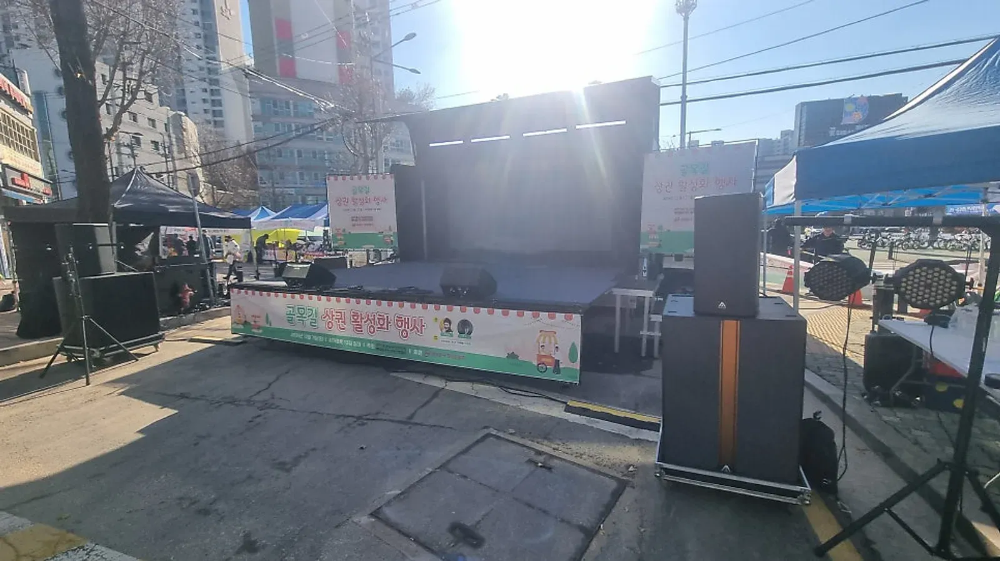

행사 준비 · 2026년 11월 12일
행사 호명 발음표: 이름·기관명 읽기와 공개 전 확인
행사 호명 발음표는 이름과 기관명을 어떻게 읽을지 당사자나 해당 기관 담당에게 확인하고, 확인되지 않은 호명은 보류하도록 만드는 운영 자료입니다. 누가 수상하는지를 정하는 명단과 달리, 이미 소개하기로 한 대상을 어떤 문장으로 읽고 공개할지에 집중합니다.

- 공식 표기와 실제 읽을 문장을 서로 다른 칸에 적습니다.
- 발음 확인과 공개할 소속·호칭 확인을 구분합니다.
- 확인되지 않은 이름은 추측해서 읽지 않고 호명을 보류합니다.

1. 행사 호명 발음표는 표기와 소리를 나눕니다
이름을 정확히 옮겨 적었더라도 읽는 방법까지 확정된 것은 아닙니다. 약칭을 글자대로 읽는 기관과 한 단어처럼 읽는 기관을 같은 방식으로 처리하지 않습니다.
공식 표기와 호명용 읽기를 별도 칸에 둡니다. 화면에는 정식 명칭을 쓰더라도 MC가 읽을 때는 승인받은 짧은 명칭을 쓸 수 있으므로 두 용도를 섞지 않습니다.
어려워 보이는 이름만 골라 확인하지 말고 처음 소개하는 이름과 기관명 전체에 확인 상태를 붙입니다. 외모나 국적, 이름의 모양을 보고 언어나 발음을 추정하지 않습니다.
2. 확인 질문은 실제로 읽을 문장까지 받습니다
담당자에게 이름만 보내기보다 소속, 직함, 호칭을 포함한 소개 문장 전체를 보여 줍니다. 어느 부분을 줄일 수 있는지와 어디서 잠깐 끊어 읽을지도 함께 확인합니다.
한글로 적은 읽기가 모호하면 담당자가 읽어 주는 소리를 듣고 다시 읽어 확인합니다. 음성 자료를 받기로 했다면 열람할 운영 담당과 정리 시점을 정하고 공개용 파일에 섞지 않습니다.
| 구분 | 적을 내용 | 확인 질문 |
|---|---|---|
| 공식 표기 | 명단·화면에 적는 명칭 | 표기 자체가 맞습니까 |
| 호명용 읽기 | 읽을 소리와 끊는 지점 | 이 문장대로 읽으면 됩니까 |
| 기관 약칭 | 전체 명칭과 허용한 약칭 | 첫 소개부터 줄여도 됩니까 |
| 공개 범위 | 읽을 소속·직함·호칭 | 무대에서 공개할 내용입니까 |
| 확인 상태 | 확인 주체와 미해결 부분 | 아직 확인하지 못한 부분은 무엇입니까 |
기록에는 업무상 필요한 확인 경로만 남깁니다. 발음을 설명하기 위한 별명이나 사적인 배경 이야기는 호명표에 넣지 않습니다.

3. 공개 전에는 실제 문장을 소리 내어 대조합니다
문서를 눈으로만 확인하면 긴 기관명 뒤에 이름을 붙일 때 생기는 끊김을 놓칠 수 있습니다. MC가 읽고 담당자가 원문을 보면서 생략되거나 덧붙은 말이 없는지 대조합니다.
읽는 법 확인과 공개 승인 확인은 다른 절차입니다. 발음이 맞더라도 소속이나 직함을 공개할지는 주최 측과 해당 대상의 확인 범위에 따라 정합니다.
비슷한 기관명이 이어지면 발음표에 순서 번호를 함께 표시합니다. 단어를 굵게 늘리는 대신 혼동 지점만 짧게 메모하고, 객석 화면에는 내부 발음 메모가 나오지 않게 분리합니다.
확인자는 맞다고 답한 부분과 답하지 못한 부분을 나누어 남깁니다. 문장 전체를 확인받지 않았는데 이름 한 부분의 답변만으로 전체 승인 표시를 하지 않습니다.
4. 불확실한 호명은 멘트로 덮지 않고 보류합니다
호명 직전에 수정 요청이 오면 철자 수정인지 발음 수정인지 먼저 구분합니다. 어느 기관이 맞는지부터 불분명하다면 발음만 고쳐 진행할 문제가 아니므로 주최 측 판단 담당에게 돌려보냅니다.
확인되지 않은 호명은 추측하지 않고 보류합니다. 기관명만 대신 읽거나 호칭을 생략하는 방식도 공개 문장을 바꾸는 일이므로 사전 승인 없이 대안으로 쓰지 않습니다.
보류된 항목에는 막연한 주의 표시 대신 남은 질문과 답을 받을 경로를 적습니다. 다음 순서로 넘어갈 수 있는지는 주최 측이 정하고, MC는 승인된 안내만 전달합니다.

이 글의 사진은 카탈로그에 기록된 행사 장면입니다. 사진 속 인물의 신원이나 실제 사용한 발음표, 확인 절차를 보여 주는 증거로 설명하지 않습니다.
5. 수정 뒤에는 운영본과 공개본을 함께 맞춥니다
읽기를 고친 사람이 화면 표기까지 바꿀 권한을 가진 것은 아닙니다. 원래 표기는 유지할지, 잘못된 글자도 함께 바로잡을지 주최 측과 자료 담당이 확인합니다.
수정한 줄은 바뀐 부분과 적용할 순서를 알려 전달합니다. 구두로만 발음을 고치고 MC에게 예전 종이를 그대로 두지 않도록 운영본의 교체 여부를 확인합니다.
변경 내용은 다시 읽어 확인한 뒤 적용합니다. 확인할 틈이 없다면 확인 완료 표시를 넣지 말고 해당 호명의 보류 상태를 유지합니다.
호명 순서가 끝나면 발음표와 공개용 자료를 구분해 정리합니다. 다음 행사에서도 같은 이름이나 직함을 그대로 쓸 수 있다고 가정하지 말고 재사용 전 확인할 항목을 남깁니다.
6. 상담에서는 호명 구간과 담당 경계를 정합니다
힐링엔터테인먼트 하는 일에는 전문 MC 진행, 무대 진행 · 현장 운영, 행사 성격에 맞춘 프로그램이 안내되어 있습니다. 발음표의 확인 주체나 공개 승인까지 회사가 대신 결정한다는 뜻은 아닙니다.
자동 견적서에서 진행에 필요한 항목을 확인하고 견적 문의에 소개가 필요한 순서와 미확정 사항을 남깁니다. 명칭을 확인할 주최 측 창구와 MC에게 전달할 시점을 구분해 협의합니다.
수상 대상 선정이나 불참·대리 수상 정리는 시상식 명단 준비를 함께 참고합니다. 이 글의 발음표는 그 명단을 대체하지 않고 읽을 문장의 확인을 별도로 돕습니다.
자주 묻는 질문
인터넷에서 찾은 발음으로 확정해도 되나요?
검색 결과는 확인 질문을 만드는 참고로만 씁니다. 대상자나 기관 담당에게 실제 호명 문장을 확인받기 전에는 완료로 표시하지 않습니다.
기관명이 길면 임의로 줄여도 되나요?
약칭 사용 여부와 처음 소개할 때의 표현을 확인합니다. 글자 수가 길다는 이유만으로 공식 명칭 일부를 빼지 않습니다.
이름만 확인됐고 직함은 미확정이면 어떻게 하나요?
직함을 뺀 소개가 가능한지 주최 측에 확인합니다. 승인받지 못했다면 일부가 맞다는 이유로 전체 호명을 진행하지 않습니다.
행사 날짜가 정해지셨나요?
날짜 · 지역 · 인원 · 행사 종류만 알려 주시면 행사에 맞춰 상담 · 견적을 안내드립니다. 행사 중엔 통화가 어려우니 문자 · 카톡을 남겨 주세요.